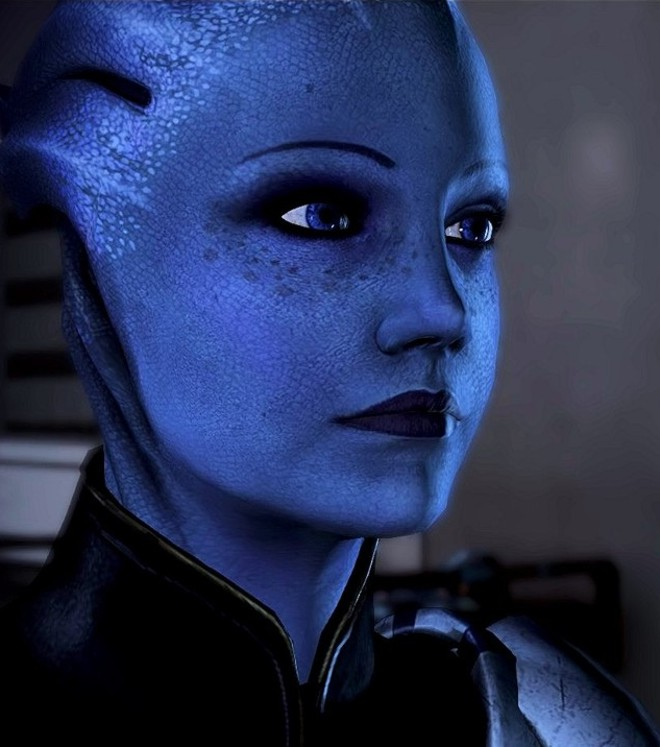

Urdnot Wrex
A famed krogan mercenary and bounty hunter, Urdnot Wrex is also one of the last Krogan Battlemasters: rare individuals who combine powerful biotic abilities with the devastating firepower of advanced weaponry. A long-lived krogan who has had many adventures, Wrex has heard of Commander Shepard during his travels, and respects the Commander as a fellow warrior.
Tali'Zorah nar Rayya
Tali'Zorah nar Rayya is a quarian and a member of Commander Shepard's squad. She is the daughter of Rael'Zorah, a member of the Admiralty Board. Though young, Tali is a mechanical genius.
Liara T'Soni
Dr. Liara T'Soni is an asari researcher who has spent the past fifty years of her life studying Prothean technology and culture, specialising in the Prothean extinction. She was born on Thessia in 2077, making her "only" 106—barely an adult in asari terms. She already has a great deal of insight into the Protheans and is a highly trained user of biotics. She is a potential romantic interest for either a male or female Shepard.